Japan / Hokkaido / Kamikawacho
Kamikawacho
Kamikawacho · Hokkaido
Kamikawacho
Highlighted on the Hokkaido map.
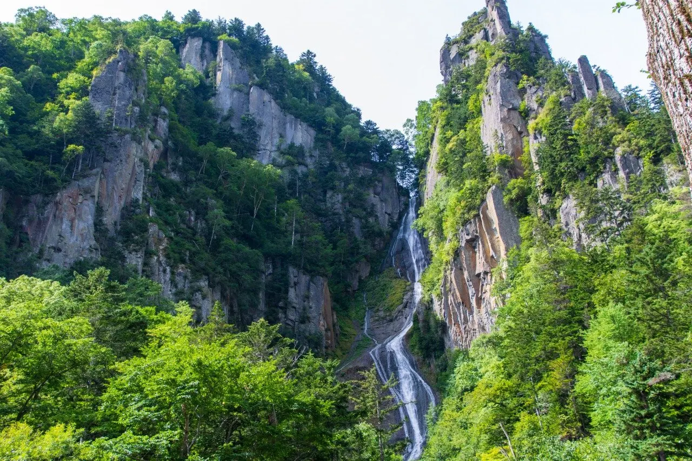
Stay
カミカワホテル（KAMIKAWA HOTEL）上川町
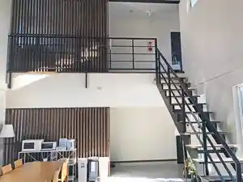
Kamikawahoteru ( Kamikawa Hotel ) Kamikawa Machi
層雲峡温泉 朝陽リゾートホテル
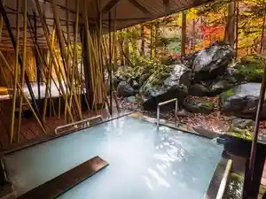
Souunkyou Onsen Asahi Rizootohoteru
天然温泉 マウントビューホテル
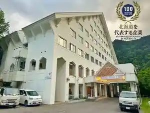
Tennen Onsen Mauntobyuuhoteru
層雲峡温泉ペンション銀河
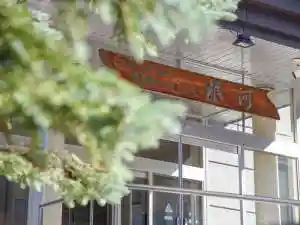
Souunkyou Onsen Penshon Ginga
民宿とだて
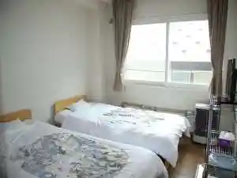
Minshuku Todate
リゾートペンション山の上
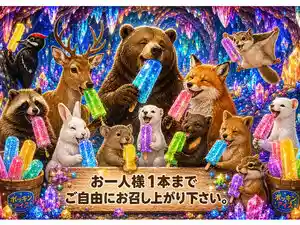
Rizootopenshon Yama No Ue
湯元 銀泉閣
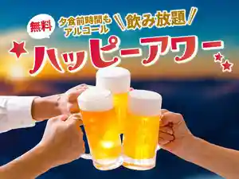
Yumoto Ginsen Kaku
ホテル大雪 ＯＮＳＥＮ＆ＣＡＮＹＯＮ ＲＥＳＯＲＴ
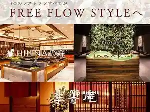
Hoteru Ooyuki O N S E N & C A N Y O N R E S O R T
Dining
旭軒
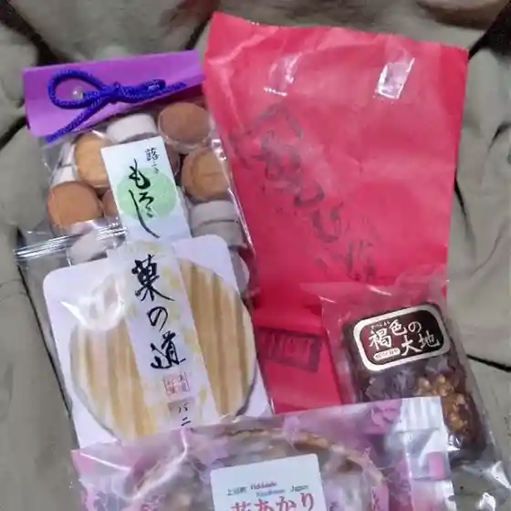
Asahi Ken
斉藤豆腐店
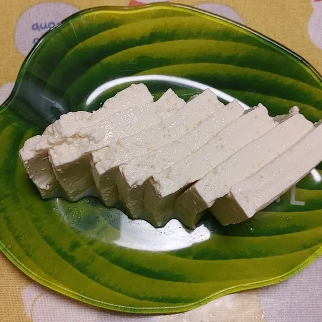
Saitou Toufu Mise
BIG SNOW DRIVE-iN
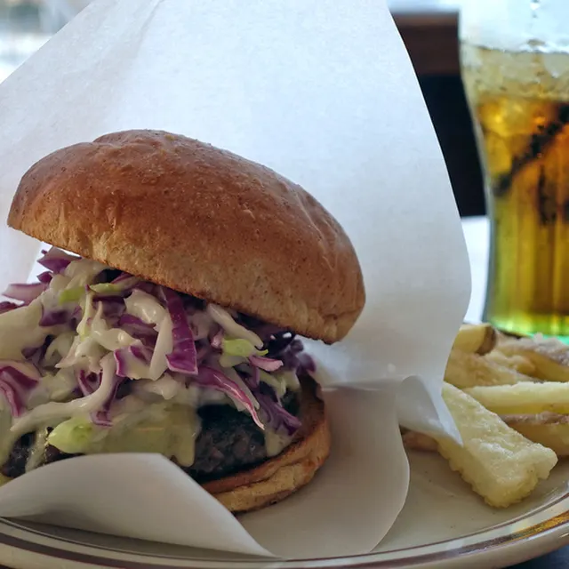
Big Snow Drive-In
望岳園

Bougaku Sono
温泉ペンション銀河
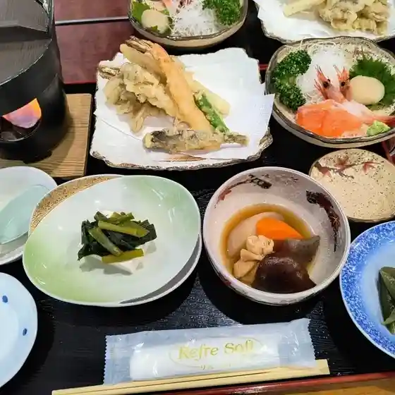
Onsen Penshon Ginga
ガーデンカフェ
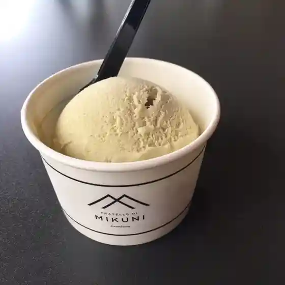
Gaadenkafe
四季
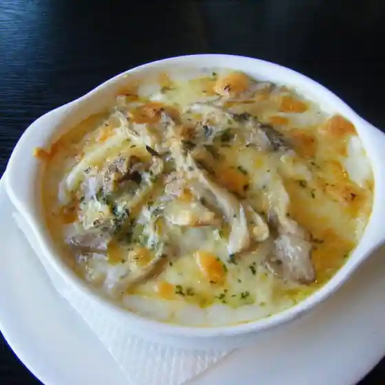
Shiki
HINNAの森
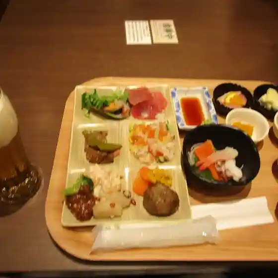
Hinna No Mori
ともちゃん
Tomochan
登山軒
Tozan Ken
きよし食堂
Kiyoshi Shokudou
愛山渓ドライブイン
Aizan Kei Doraibuin
hibi
Hibi
ともちゃん食堂 黒岳店
Tomochan Shokudou Kurodake Mise
ひめや製パン菓子舗
Himeya Seipan Kashi Ho
セブンイレブン 上川層雲峡店
Sebun'Irebun Kamikawa Souunkyou Mise
池乃屋
Ikeno Ya
ヤマイチカフェ
Yamaichikafe
喫茶男
Kissa Otoko
セブンイレブン 上川町店
Sebun'Irebun Kamikawa Machi Mise
ショップ キャニオン モール
Shoppu Kyanion Mooru
岡田屋
Okadaya
リゾートペンション 山の上
Rizootopenshon Yama No Ue
喰い処あかし
Kui Tokoro Akashi
Sights
Sounkyo
Sounkyo
Sounkyo gorge on the upper Ishikari River: about 24 km of columnar-jointed cliffs on the north side of Daisetsuzan.
Ryusei Falls Ginga Falls
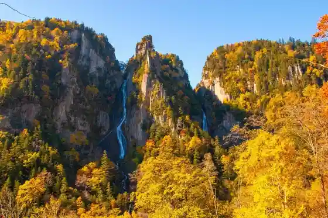
Ryusei Falls Ginga Falls
Ryusei Falls (90 m) and Ginga Falls (120 m) in Sounkyo, both among Japan Top 100 Waterfalls, viewed together from Sohbaku-dai.
Ginsen Dai
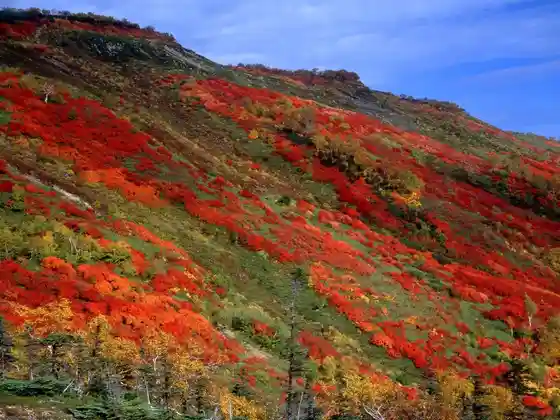
Ginsen Dai
Ginsendai trailhead at about 1,490 m on the Daisetsu tourist road, known for mid-September autumn color and Aka-dake access.
Daisetsuzan Sounkyo Kurodake Ropuei & Rifuto
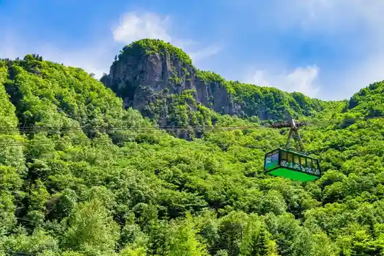
Daisetsuzan Sounkyo Kurodake Ropuei & Rifuto
Ropeway and pair lift from Sounkyo Onsen toward Kurodake 5th to 7th stations at about 1,300 m.
Kamikawacho Oyuki Shuzo (Midorigaoka Kura)
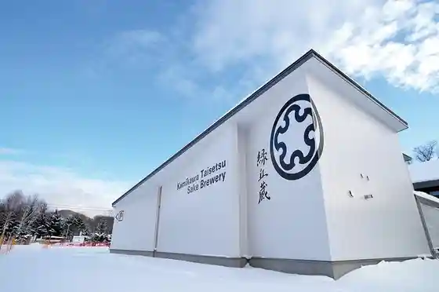
Kamikawacho Oyuki Shuzo (Midorigaoka Kura)
Kamikawa Taisetsu Sake Brewery Midorogaoka cellar, brewing with selected Hokkaido rice as a local revitalization project.
Hokkaido Aisupabirion
Hokkaido Aisupabirion
Ice pavilion recreating Japan record low of -41 C (1902), with a massive ice-wall exhibition built over decades.
Oyuki Mori no Garden (Hokkaido Garden Kaido)
Oyuki Mori no Garden (Hokkaido Garden Kaido)
Taisetsu Forest Garden on a hillside at about 650 m, with seasonal flowers under the Daisetsuzan peaks (Hokkaido Garden Path).
Daisetsuzan Sounkyo Kurodake Ski Area
Daisetsuzan Sounkyo Kurodake Ski Area
Kurodake ski area in Daisetsuzan National Park above Sounkyo, with mountain skiing into early May powder.
Sounkyo Bijita Center
Sounkyo Bijita Center
Sounkyo Visitor Center with a large Daisetsuzan terrain model, trail info, alpine flora, and butterfly exhibits.
Kurodake Baths
Kurodake Baths
Day-use baths in Sounkyo Onsen; the open-air bath overlooks the gorge columnar cliffs.